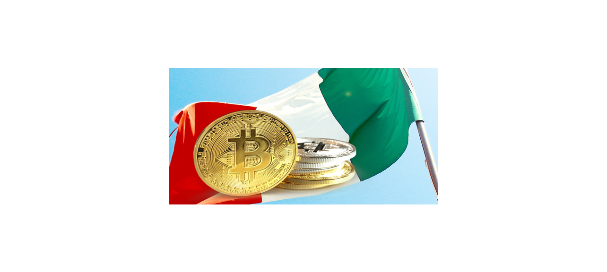

Italian Parliament Approves 26% Crypto-Gains Tax in 2023 Budget

Prime Minister Giorgia Meloni's new bill also includes an incentive for those declaring crypto for tax purposes.
Crypto traders in Italy will be subject to a 26% capital-gains tax starting in 2023, according to a new budget that won parliamentary approval on Thursday.
Italian Prime Minister Giorgia Meloni's 2023 expansionary budget – which was completed in a rush before the end of the year – features 21 billion euros ($22.3 billion) in tax breaks to assist businesses and households facing the energy crisis, Reuters reported.
In Italy, where crypto remains largely unregulated, the 387-page budget legitimizes crypto assets by defining them as "a digital representation of value or rights, which can be transferred and stored electronically, using the technology of distributed ledger or similar technology."
Italy's (and most recently Portugal's) move to introduce a capital-gains tax on crypto comes ahead of the implementation of the European Union's Markets in Crypto Assets (MiCA) regulation that promises a licensing frameworks and stringent operating requirements for crypto-service providers in the 27-member bloc.
The 26% rate applies to gains from crypto trading if they exceed 2,000 euros per tax period. As an incentive for declaring crypto profits, the new bill also sets a "substitute income tax" for investors at 14% of the value of the assets held as of Jan. 1, 2023, instead of the cost at the time of purchase.
According to the new rules, losses from crypto investments can be deducted from profits and be carried forward.
Investors, however, may require some additional guidance on what qualifies as a taxable event as the document also says, "the exchange between crypto assets having same characteristics and functions," doesn't constitute a "fiscal case."